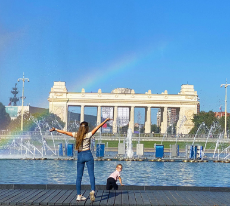
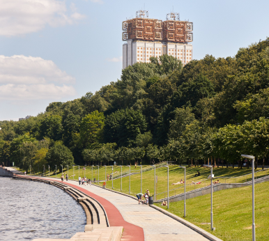
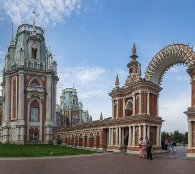

От ВДНХ до парка Горького
Этот маршрут идеально подходит для тех, кто хочет насладиться как природой, так и историей Москвы. Он соединяет два крупных и популярных парка: ВДНХ и Парк Горького, а также проходит через несколько живописных и исторических мест.
- Старт: ВДНХ (станция метро ВДНХ).
- Далее: Парк Сокольники.
- Финиш: Парк Горького (станция метро Парк культуры).
Дистанция: 10 км
Уровень сложности: средний

От Воробьевых гор до Лужников
Если вы хотите сочетать спорт с прекрасными видами, этот маршрут — для вас! Прокатитесь от Воробьевых гор, наслаждаясь видами на Москву-реку и город, а затем направьтесь в Лужники, где можно заняться спортом или просто отдохнуть.
- Старт: Воробьевы горы (станция метро Воробьевы горы).
- Далее: По набережной Москвы-реки.
- Финиш: Лужники (станция метро Лужники).
Дистанция: 8 км
Уровень сложности: легкий

От Парка Победы до Царицыно
Этот маршрут идеально подходит для тех, кто хочет посмотреть на Москву и насладиться комфортными велодорожками и зелеными парками. Проезжая через важнейшие культурные и исторические объекты, вы не только насладитесь природой, но и получите культурный опыт.
- Старт: Парк Победы (проспект Генерала Ермолова 3, станция метро Парк Победы).
- Далее: Велодорожки вдоль Москвы-реки.
- Финиш: Парк Царицыно (станция метро Царицыно).
Дистанция: 10 км
Уровень сложности: средний